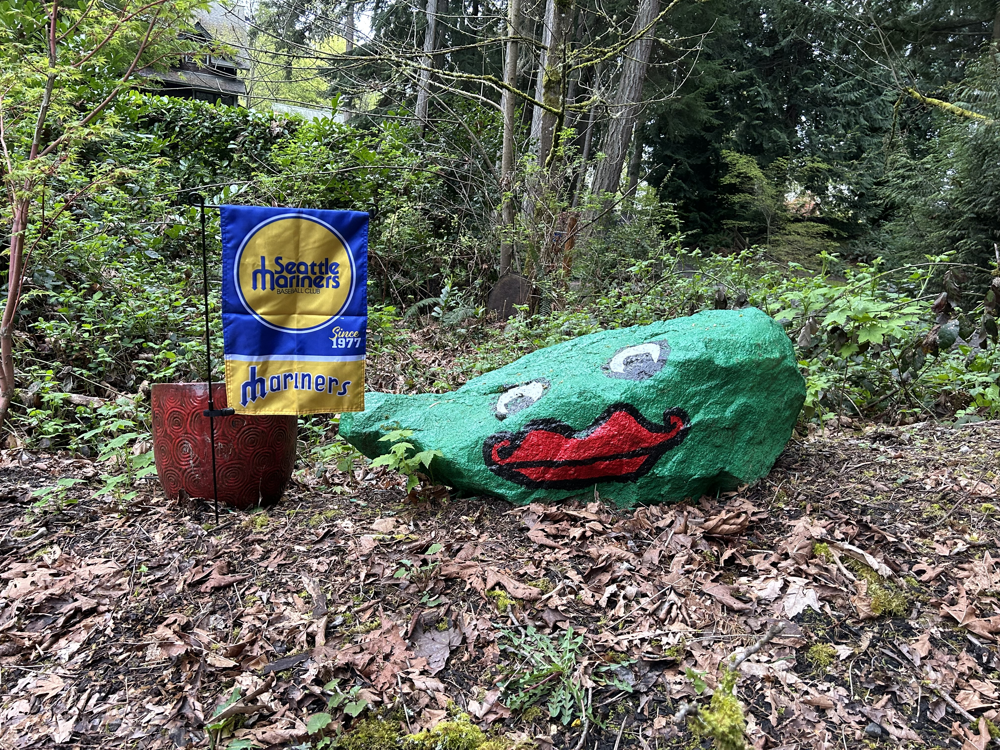
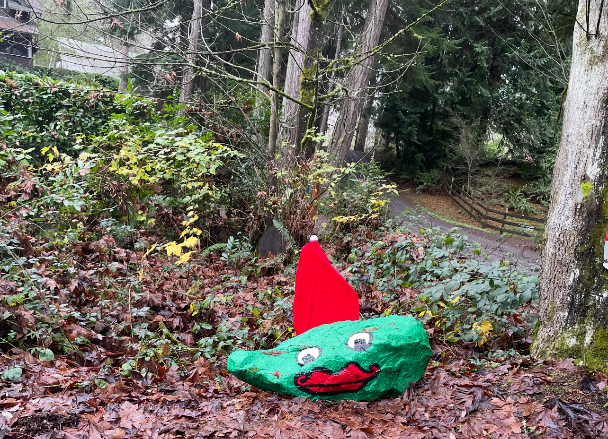
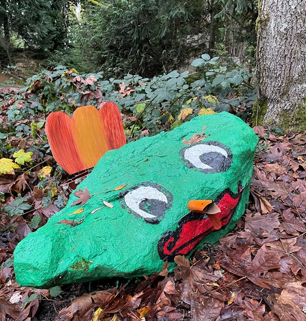
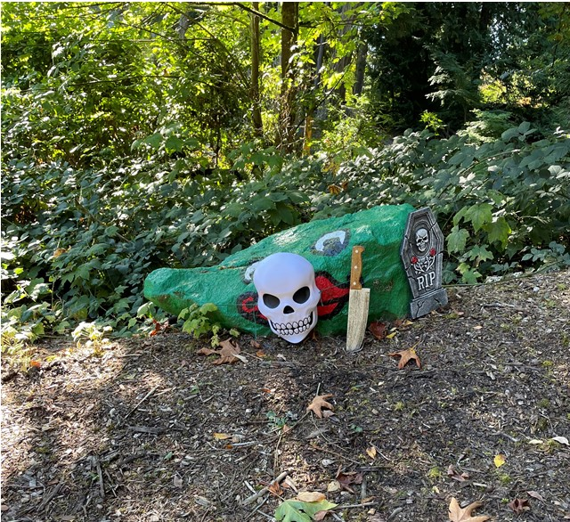

A small tribute to one of Bainbridge Island’s beloved local landmarks — dressed up
for holidays, celebrations, and special occasions around Murden Cove.
Bainbridge Island • Local Landmark
Little Frog, Big Personality
Frog Rock is a familiar Bainbridge Island landmark. This page follows a smaller
Murden Cove version, decorated throughout the year for holidays, seasons,
celebrations, and whatever occasion calls for a little extra charm.
Opening Day • 2026
Opening Day Frog
Celebrating Opening Day 2026 with a festive Frog Rock look for the start of a new season.

A cheerful springtime entry for the little Frog Rock collection.
Christmas • 2025
Christmas Frog
Frog Rock dressed for Christmas 2025 with a holiday look for the winter season.

A tiny bit of holiday spirit for the cove.
Thanksgiving • 2025
Thanksgiving Frog
Frog Rock dressed for Thanksgiving 2025 — a seasonal nod to fall, gratitude, and gathering.

A cozy autumn entry in the Frog Rock calendar.
Halloween • 2025
Halloween Frog
Frog Rock dressed up for Halloween 2025 with a little seasonal mischief.

A spooky little costume moment for the neighborhood frog.
Wedding • August 2025
August Wedding Frog
Frog Rock dressed for an August 2025 wedding celebration — a small landmark joining a big day.